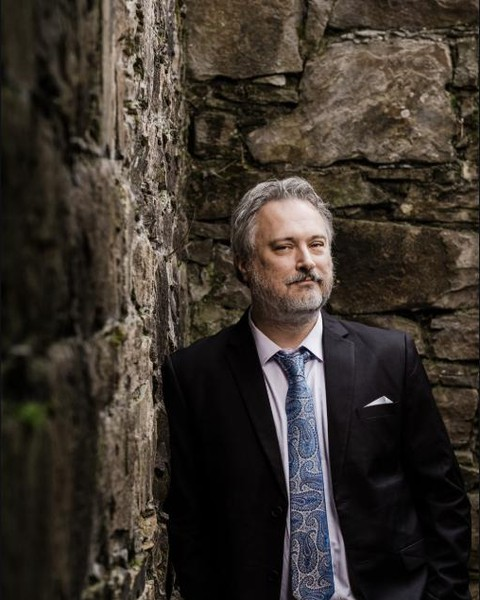

Joseph Dangerfield has lived and worked professionally in Italy, Germany, Russia, China, Holland, and New York.
He is the recipient of many awards and recognitions, including the Aaron Copland Award, the Indianapolis Chamber Orchestra’s Composition Prize, the Henry and Parker Pelzer Prize for Excellence in Composition, and the Young and Emerging Composers Award. He was a Fulbright Scholar to the Russian Federation and the Netherlands, where he served as composer-in-residence with the Ensemble Studio New Music at the famed Moscow Conservatory, and lectured at Maastricht Conservatorium. He has been a resident in the Leighton Studios of the prestigious Banff Centre in Alberta, Canada, and the Yaddo Colony in New York. Recordings of his works are available on the Albany Records label, and his music is published by American Concert Editions.
Over the past several years his creative voice has garnered much attention, with performances of his works throughout the United States and abroad. American presenters include Carnegie Hall, the Eastman School of Music, Boston Conservatory, the San Francisco New Music Festival, and the Society for Electro-Acoustic Music, among others. His instrumental and chamber compositions have also been performed at such international venues as the Moscow Conservatory, the Vienna Konzerthaus, the Conservatoire à rayonnement régional de Paris, the Frankfurter KünstlerKlub, the Conservatorio di Milano, and in Cairo, Egypt.
Originally trained as a pianist, Dangerfield is also active as a performer and conductor throughout the United States. He has conducted chamber and orchestral concerts of music both new and from the canon in New York, Vienna, and Prague, among other cities, and has served on the faculty of West Virginia University, the University of Florida, McNeese State University, and Coe College. He currently resides in Pittsburgh with his wife, Ami, and their three children.